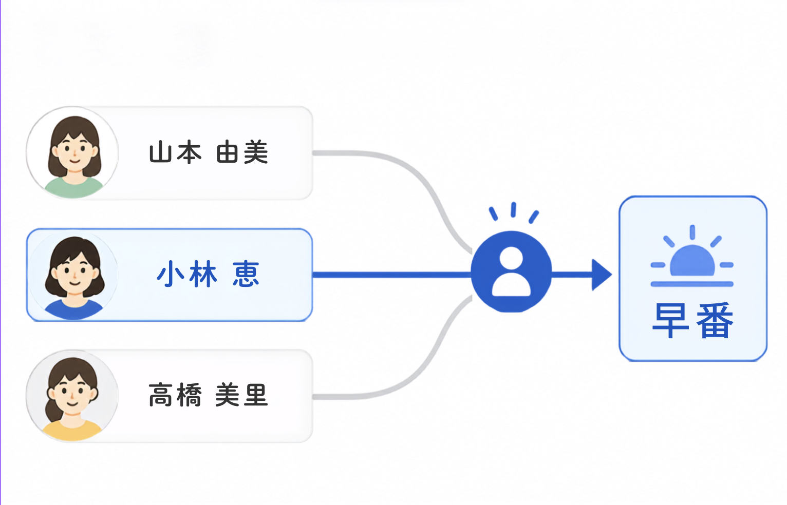
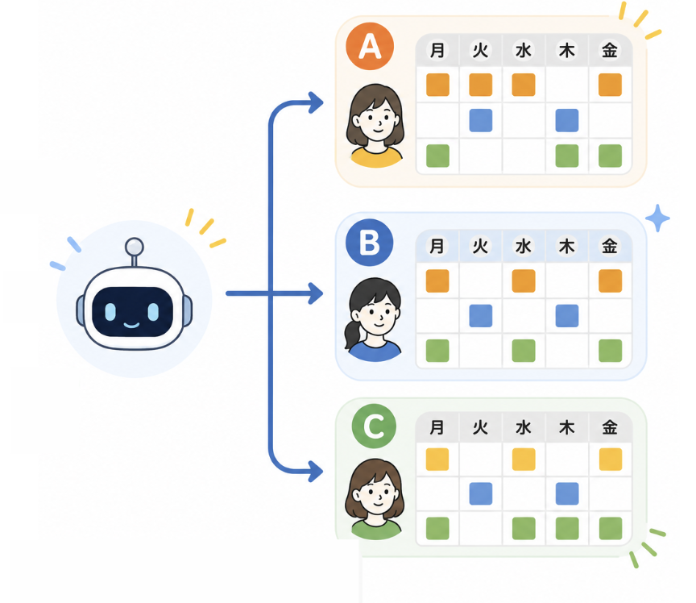
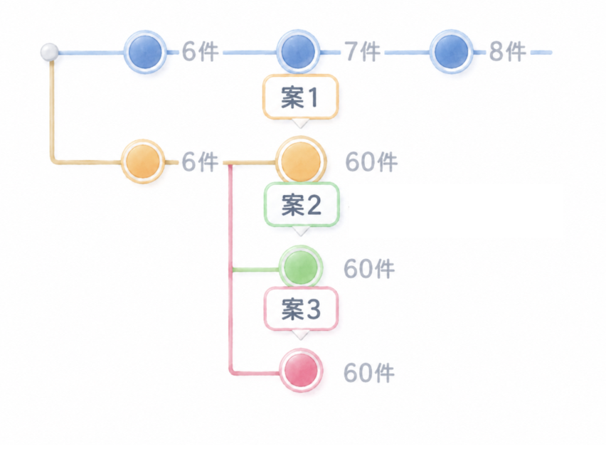

希望休と必要人数の 両立が難しい
希望を尊重しつつ、必要人数を満たすシフトを組むのが大変です。
シフト作成者の試行錯誤を支える伴走型AI
希望休、必要人数、公平感——
シフトは、さまざまな条件や思いの中で組み立てられます。
シフトントンは、その迷いや試行錯誤に寄り添い、
納得できる「一枚」を一緒につくります。
希望を尊重しつつ、必要人数を満たすシフトを組むのが大変です。
公平に組んでいるつもりだけど、スタッフの不満が溜まっていないか心配です。
最終判断は自分。いつも時間と精神的コストがかかっています。
シフトントンは、シフト作成者の思考を支えるAIです。
条件や思いを整理し、複数案や根拠を提示。
納得できる一枚にたどり着くまで、伴走します。
条件や希望を整理し、視覚的にわかりやすくします。

複数パターンを比較・提案し、 判断の材料を増やします。

変更の履歴や理由を残せるから、 試行錯誤がスムーズになります。

動画でわかるシフトントンの使い方
シフトントンを実際の現場で試し、
一緒により良いプロダクトに育てていきませんか？
01 お問い合わせ
メールから ご連絡ください
02 ヒアリング
課題や現状を お伺いします
03 ご案内
お試し方法を ご案内します
04 お試し利用
実際の現場で お試しください
05 フィードバック
ご意見・ご感想を お聞かせください
シフトントンは、現場の課題に寄り添い、
持続可能な価値づくりに取り組んでいます。
正式提供に向けて準備中
モニター募集は、お問い合わせから受け付けています。
ご希望やご質問を、お気軽にご連絡ください。
実際の画面では、希望条件の整理から複数案の比較までをご覧いただけます。